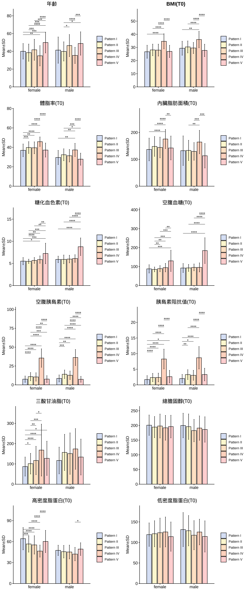

| Pattern I (n=96) | Pattern II (n=382) | Pattern III (n=389) | Pattern IV (n=69) | Pattern V (n=38) | Pattern I (n=18) | Pattern II (n=96) | Pattern III (n=54) | Pattern IV (n=39) | Pattern V (n=24) | |
|---|---|---|---|---|---|---|---|---|---|---|
| Age | 40.1 ± 8.7 | 38.5 ± 9.6 | 41.7 ± 11.8 | 35 ± 11.4 | 49.9 ± 11.7 | 41.4 ± 14.8 | 39.9 ± 10.8 | 46.5 ± 12.4 | 35.5 ± 9.1 | 48.8 ± 13.1 |
| BMI | 26.7 ± 4.9 | 28.1 ± 4.4 | 28 ± 4.5 | 34.7 ± 5.7 | 27 ± 4.6 | 29.4 ± 5.3 | 30.4 ± 4.5 | 29.6 ± 4.2 | 36 ± 6.2 | 27.7 ± 4.7 |
| PBF | 36.9 ± 6.5 | 39.8 ± 6 | 39.6 ± 6.1 | 45.8 ± 4.9 | 37.2 ± 7.2 | 29.6 ± 7.3 | 32.4 ± 6.1 | 31.4 ± 6.4 | 37.3 ± 6.8 | 27.8 ± 6.2 |
| Viceral Fat | 133.7 ± 49.1 | 150 ± 46.7 | 144 ± 45.3 | 191 ± 34.4 | 141 ± 55 | 128.7 ± 62.3 | 127.9 ± 44.5 | 120.5 ± 38.8 | 178 ± 52.9 | 107 ± 47.4 |
| HbA1C | 5.5 ± 0.8 | 5.5 ± 0.5 | 5.7 ± 0.7 | 5.9 ± 0.8 | 7.2 ± 2.3 | 5.9 ± 0.7 | 5.9 ± 1 | 6 ± 0.9 | 6.1 ± 0.9 | 8.8 ± 2 |
| Fasting Glucose | 88 ± 21.8 | 85.3 ± 12.6 | 89.2 ± 16 | 94.5 ± 22.3 | 130.3 ± 55.8 | 92.6 ± 23.5 | 93.1 ± 18.3 | 95.9 ± 17.8 | 95.8 ± 23.7 | 184.5 ± 67.8 |
| Fasting Insulin | 7.6 ± 4.2 | 10.9 ± 5.4 | 10.5 ± 5.5 | 35.6 ± 12.2 | 7.7 ± 4.5 | 8.6 ± 4.6 | 14.1 ± 5.6 | 12.8 ± 5.6 | 36.3 ± 10.6 | 7.4 ± 3.9 |
| HOMA-IR | 1.7 ± 1.3 | 2.3 ± 1.3 | 2.4 ± 1.4 | 8.3 ± 3.2 | 2.6 ± 2 | 2 ± 1.3 | 3.3 ± 1.6 | 3.1 ± 1.6 | 8.7 ± 3.6 | 3.3 ± 2 |
| TG | 87 ± 46.9 | 101.2 ± 51 | 116.9 ± 69.9 | 168.2 ± 128 | 127.7 ± 84.2 | 116.9 ± 65.8 | 157.2 ± 89.6 | 151 ± 102 | 173.9 ± 100.2 | 134 ± 88.5 |
| TC | 201 ± 34.6 | 194.5 ± 36 | 198.2 ± 40.7 | 192.1 ± 42.2 | 196.3 ± 38.5 | 199.9 ± 41.7 | 196 ± 43.5 | 182.6 ± 38.1 | 191.2 ± 41.5 | 186.3 ± 43.2 |
| LDL | 119.1 ± 28.5 | 121.2 ± 31.7 | 123.7 ± 35.5 | 125.6 ± 36.4 | 114.2 ± 35.6 | 131.4 ± 41.3 | 128.6 ± 37 | 117.7 ± 35.4 | 125.4 ± 31.2 | 114.6 ± 37.9 |
| HDL | 64.2 ± 15.9 | 56.6 ± 11.7 | 55.3 ± 13.1 | 46.5 ± 8.6 | 60.2 ± 15.8 | 47.5 ± 7.3 | 45.5 ± 9 | 45.1 ± 9.8 | 42.2 ± 9.6 | 49.3 ± 9 |
|
|

| Pattern.I | Pattern.II | Pattern.III | Pattern.IV | Pattern.V | Sum | |
|---|---|---|---|---|---|---|
| Normal | 245 (16.24%) | 754 (49.97%) | 409 (27.1%) | 61 (4.04%) | 40 (2.65%) | 1509 (100%) |
| Pre-DM | 52 (5.79%) | 278 (30.96%) | 450 (50.11%) | 105 (11.69%) | 13 (1.45%) | 898 (100%) |
| DM | 29 (5.24%) | 61 (11.03%) | 240 (43.4%) | 77 (13.92%) | 146 (26.4%) | 553 (100%) |
| Total | 326 | 1093 | 1099 | 243 | 199 | 2960 |
| Note: Before intervention |